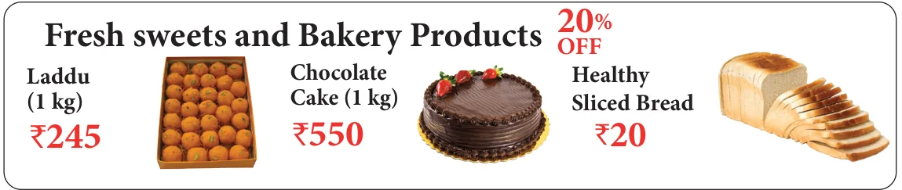
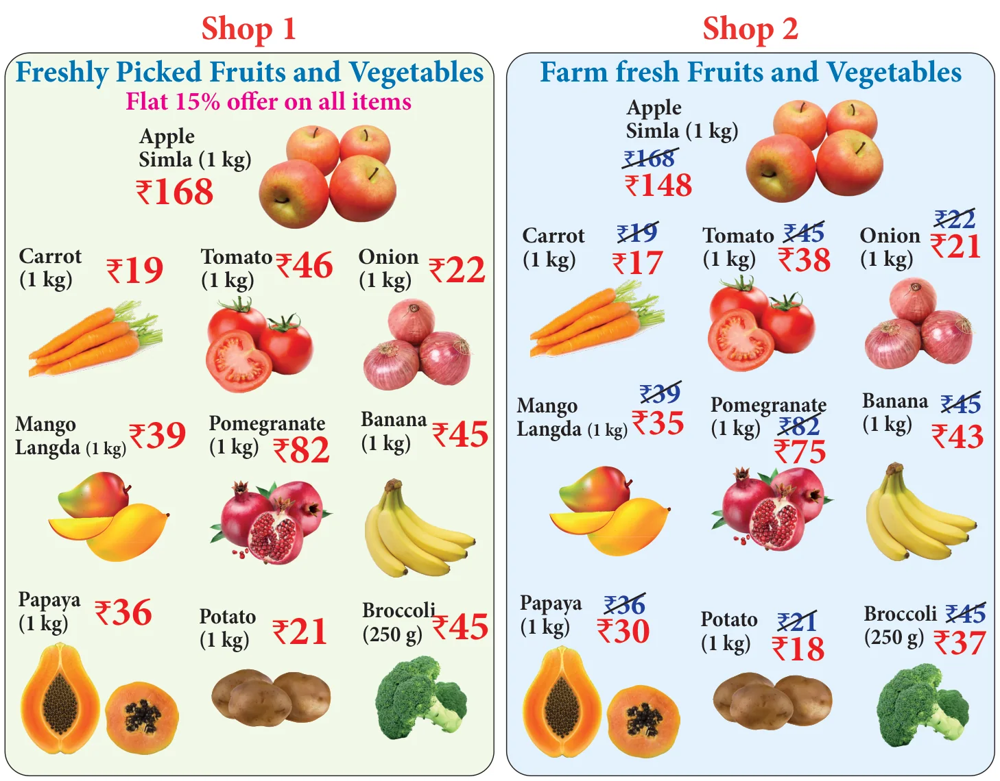

- Find the best buy of the following purchases:
- A pack of 5 chocolate bars for ₹175 or 3 chocolate bars for ₹114?
- Basker buy \(1\frac{1}{2}\) dozen of eggs for ₹81 and Aruna buy 15 eggs for ₹64.50?
- Using the given picture find the total special offer price of fresh sweets and bakery products to buy \(\frac{1}{2}\) kg laddu, 1 kg cake, 6 pockets of bread.

- Using the given picture prepare a price list.
Suppose you plan to buy \(1\frac{1}{2}\) kg of apple, 2 kg of pomegranate, 2 kg of banana, 3 kg of mango, \(\frac{1}{2}\) kg of papaya, 3 kg of onion, \(1\frac{1}{2}\) kg of tomato, and 1 kg of carrot in shop 1, how much will you save compared to shop 2.

Chapter 7 · Information Processing